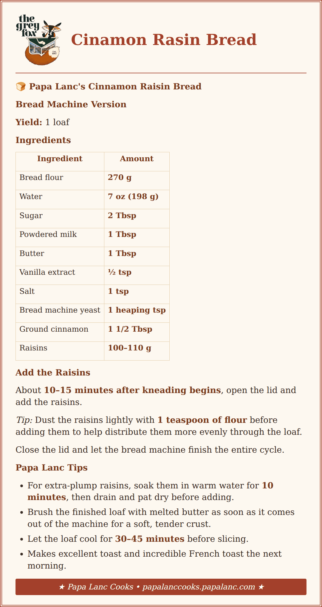

WELCOME
🍞 Papa Lanc's Cinnamon Raisin Bread
Bread Machine Version
Yield: 1 loaf
Ingredients
Ingredient | Amount |
|---|---|
Bread flour | 270 g |
Water | 7 oz (198 g) |
Sugar | 2 Tbsp |
Powdered milk | 1 Tbsp |
Butter | 1 Tbsp |
Vanilla extract | ½ tsp |
Salt | 1 tsp |
Bread machine yeast | 1 heaping tsp |
Ground cinnamon | 1 1/2 Tbsp |
Raisins | 100–110 g |
Add the Raisins
About 10–15 minutes after kneading begins, open the lid and add the raisins.
Tip: Dust the raisins lightly with 1 teaspoon of flour before adding them to help distribute them more evenly through the loaf.
Close the lid and let the bread machine finish the entire cycle.
Papa Lanc Tips

WELCOME
Converted from the original file for viewing — open/download the original to edit it.